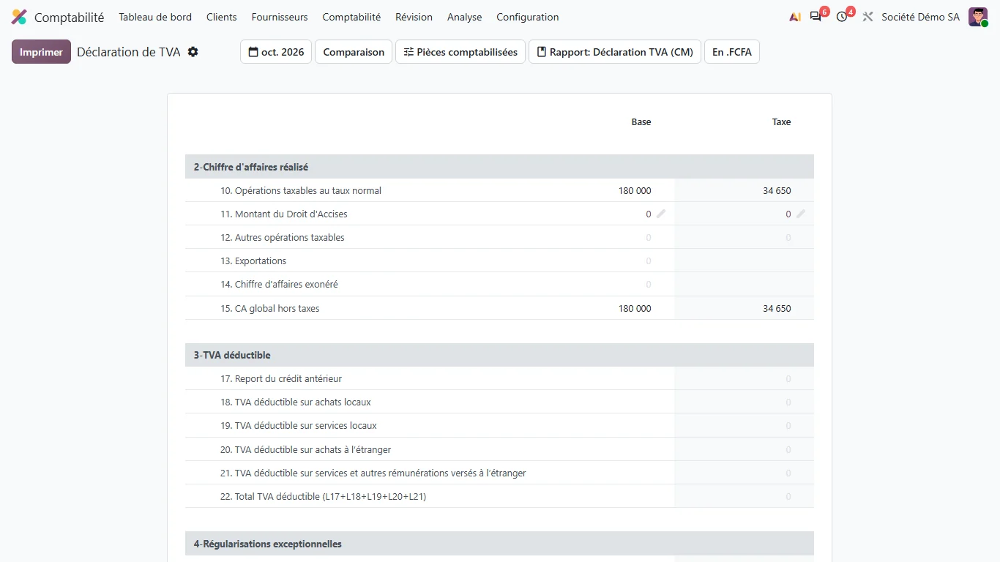

Liquider la TVA et les retenues chaque mois
Objectif. Préparer la déclaration mensuelle à partir d'Odoo et solder les comptes de TVA.
Menu Odoo 15Comptabilité > Rapports > Rapport de taxes
Étapes
- Ouvrez le rapport de taxes et choisissez le mois.
- Contrôlez la TVA collectée, la TVA déductible et les retenues subies.
- Rapprochez les montants avec les comptes 44 de la balance générale.
- Après dépôt de la déclaration, passez l'écriture de liquidation et le paiement.

À vérifier
- Le rapport de taxes concorde avec les comptes 443 et 445 du mois.
À éviter
- Ne modifiez plus une facture d'un mois déjà déclaré (verrouillez-le, formation 31).
Exercice
Éditez le rapport de taxes du mois et rapprochez-le de la balance.